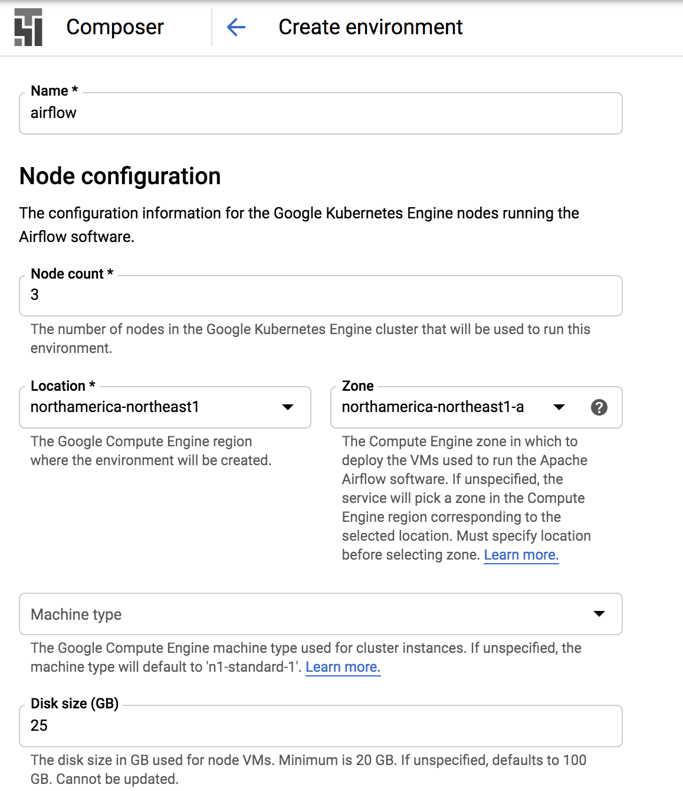
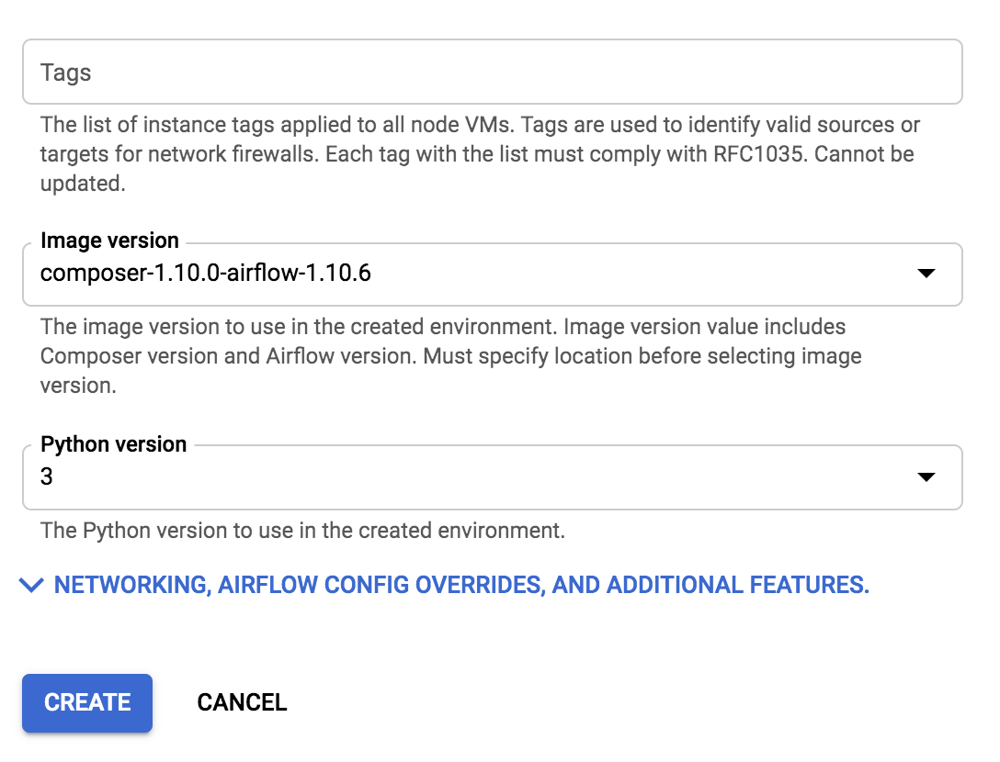
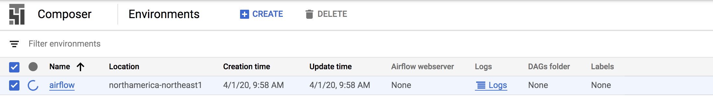
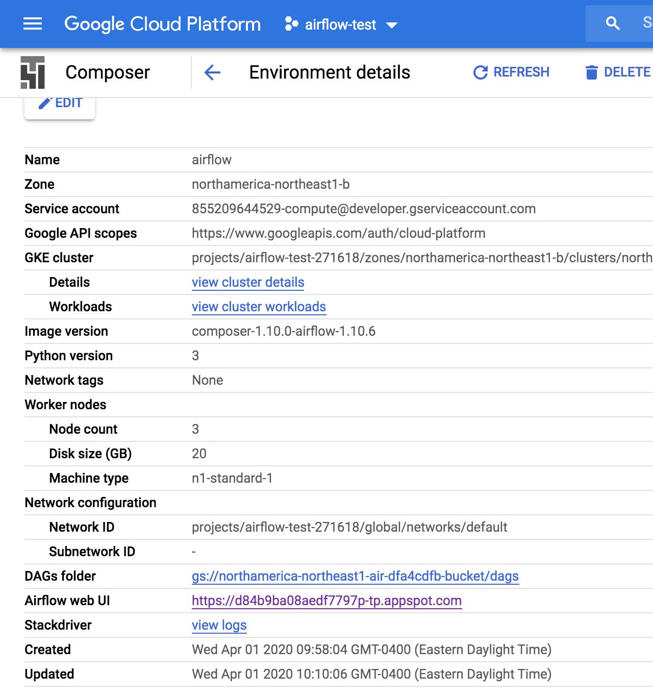
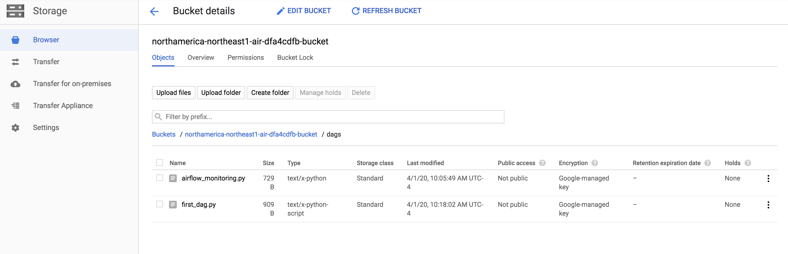
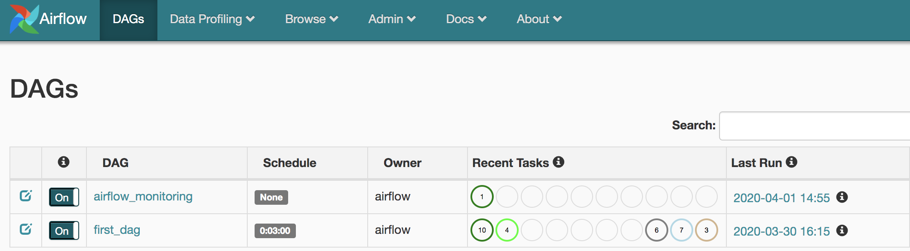
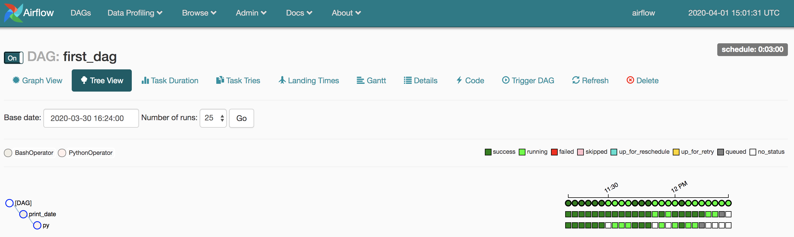

- Mon 02 March 2020
- Data Science
- Rittik Ghosh
- #Airflow, #Pipelines, #GCP
"Airflow is a platform to programmatically author, schedule and monitor workflows.
Use Airflow to author workflows as Directed Acyclic Graphs (DAGs) of tasks. The Airflow scheduler executes your tasks on an array of workers while following the specified dependencies. Rich command line utilities make performing complex surgeries on DAGs a snap. The rich user interface makes it easy to visualize pipelines running in production, monitor progress, and troubleshoot issues when needed."
Airflow is a powerful tool that lets you schedule and automate the execution of tasks and scripts. Execution sequencing is specified conveniently using directed acyclic graphs (DAG). Airflow also comes with a rich web-UI interface that helps monitor and control tasks and pipelines as can be seen below:

Airflow works well with Google cloud platform (GCP) . For example, along with several "operators" that work well with popular databases, Airflow also natively supports a BigQueryOperator to interface with data warehouses on GCP. There are several tutorials & blogs available online including in the offical documentation. The purpose of this post is to demonstrate how to deploy airflow on Google Cloud Composer (which is the quickest and simplest way for Airflow deployments)
Apart from speed and ease, using Composer frees data scientists from server related DevOps tasks. GCP also provides robust scaling and monitoring facilities.
As is typical for GCP, we first have to create a project. I have called it airflow-test. After project creation scroll down to composer under the BIG DATA heading.
 
GCP provides a convenient configuration panel where we can pick our python and airflow versions. We can also pick the number of nodes and their location. Additionally, there are facilities to install dependent python packages. This exemplifies the unparalleled ease with which airflow can be deployed using GCP Composer.
After hitting create, GCP builds our environment and this can take a few minutes (12 minutes in my case).

Clicking into the created environment gives us links to the Airflow web UI and to the DAGs folder.

The DAGs folder is a Google Cloud Bucket that lets us easily upload the DAGs we need to run.

I have uploaded a simple DAG, "first_dag", it is scheduled to run every 3 minutes and uses a BashOperator & a PythonOperator. Uploading it to the cloud bucket is all that is required for it to be up and running.
 
There we have it, our DAG is up & running in minutes.